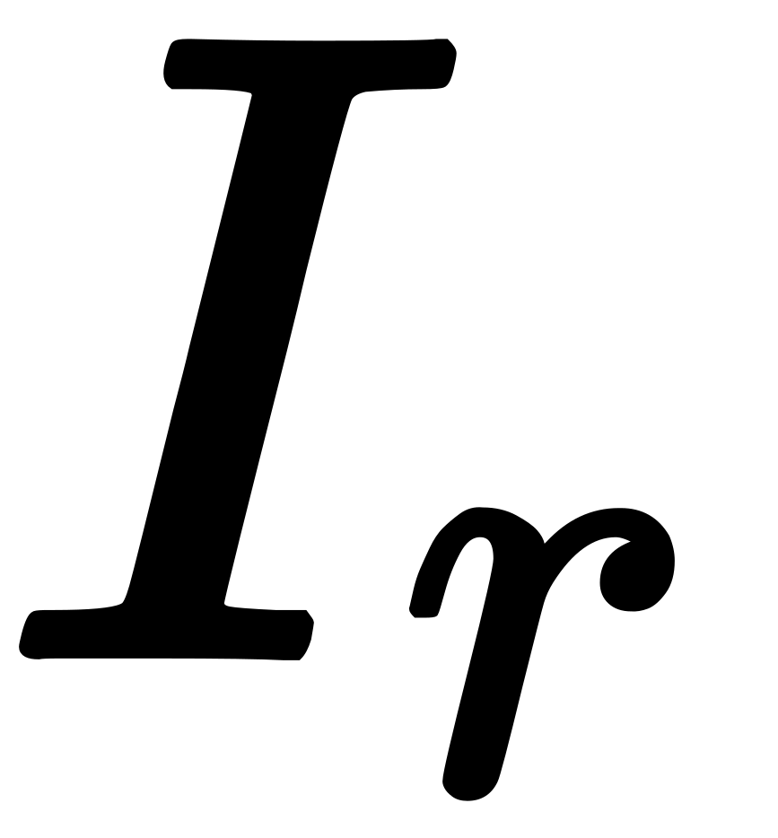
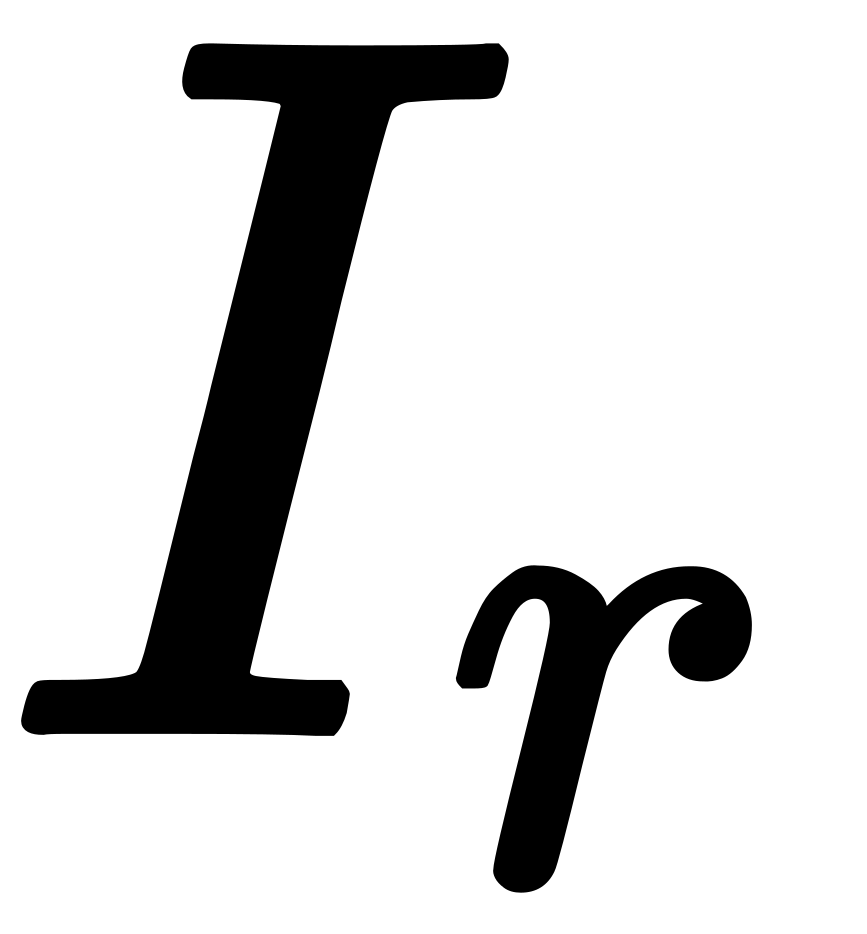
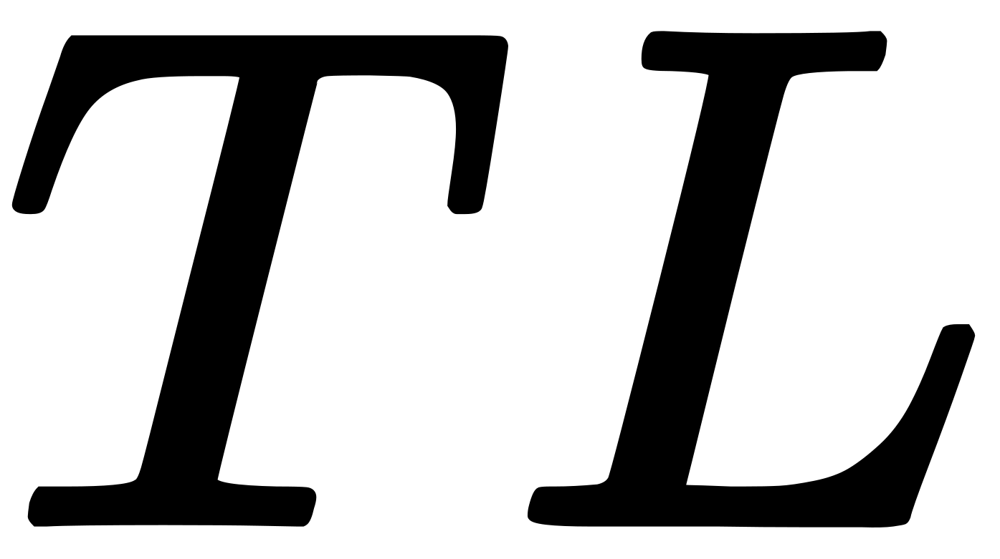

2022年
問題83音と振動に関する用語とその定義との組合せとして，最も不適当なものは次のうちどれか．
（1）暗騒音 ある騒音環境下で，対象とする特定の音以外の音の総称
（2）吸音 壁などで音を遮断して，透過する音のエネルギーを小さくすること
（3）騒音レベル 人間の聴覚の周波数特性で補正した，騒音の大きさを表す尺度
（4）音の強さ 音の進行方向に対して，垂直な単位面積を単位時間に通過する音のエネルギー
（5）時間率レベル あるレベル以上の振動に暴露される時間の，観測時間内に占める割合
2022年
問題83正解（2）頻出度AAA
壁などで音を遮断して，透過する音のエネルギーを小さくすることは「遮音」である．「吸音」は遮音のメカニズムの一部とみることができる（2022-83-1図参照）．

上図で，
ただし， ：入射音の強さ，：反射音の強さ，
：入射音の強さ，：反射音の強さ， ：吸収の強さ，
：吸収の強さ， ：透過音の強さ（単位は全て［W/m2]）．
：透過音の強さ（単位は全て［W/m2]）．
壁の遮音性能は次式の透過損失値［dB］で表される．

-(3) ある基準値との比の対数をとって量を表示することをレベル表示（デシベル尺度）という．これを音に用いて，音響工学では音のパワーレベルを次のように定義している．
ただし， ：音のパワーレベル［dB］，
：音のパワーレベル［dB］， ：音の強さ［W/m2］，
：音の強さ［W/m2］， ：基準の音の強さ（＝1012W/m2）．
：基準の音の強さ（＝1012W/m2）．
騒音のパワーレベルを人間の聴覚の周波数特性で補正した値を騒音レベルという．騒音レベルの単位は［dB(A)]となる．
-(4) 音の強さは，この定義から，［W/m2］となる．
-(5) 時間率レベルが，L80＝60dBと書かれていたら，60dB以上の時間が80％であることを示す．振動規制法の基準値には時間率レベルが用いられている．